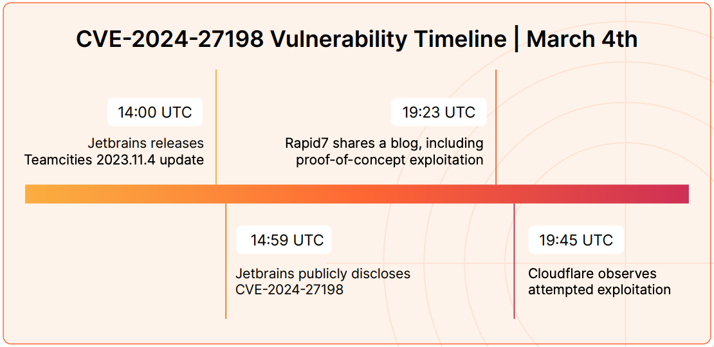
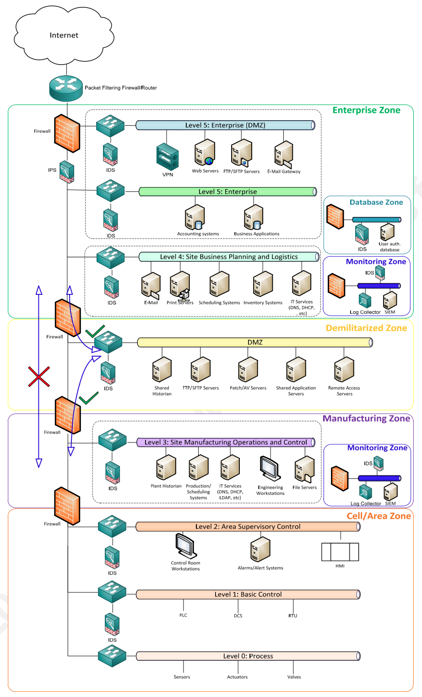
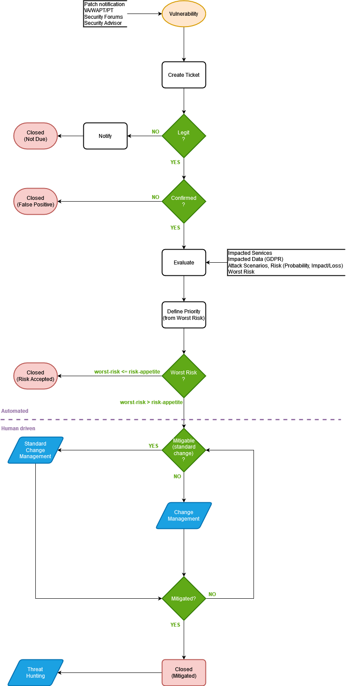
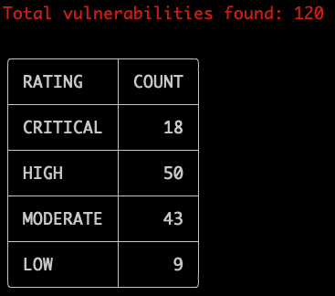
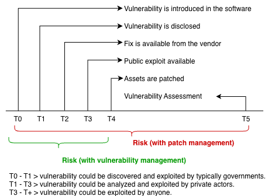

Vulnerability Management¶

A lot has already been said about Vulnerability Management (VM), and I've personally touched on this topic several times before. Yet, the reality is that managing vulnerabilities remains a significant challenge for most organizations.
Our offensive activities consistently reveal that, when successful, the attack path often hinges on software or logical vulnerabilities. More often than not, these vulnerabilities were already known to the IT department but, for one reason or another, mitigation wasn't feasible.
In other words, the success of the offensive action stems from widely known vulnerabilities.
And this isn't a rare scenario.
What is a vulnerability?¶
In the most common (and technical) sense, a vulnerability is a software flaw that can compromise confidentiality, integrity, and/or availability. However, this definition only covers a specific category. If we broaden the concept, the term "vulnerability" can also apply to:
- Processes
- People
- Configurations
Process vulnerabilities¶
A process vulnerability arises when workflows fail to ensure confidentiality, potentially exposing sensitive information to unauthorized individuals. For example, I once came across a box of employee pay slips left unattended in a real-world scenario. In that case, the employee handling the box was following the correct procedure, but the procedure itself failed to account for such risks.
Psychological vulnerabilities¶
These occur when attackers exploit human weaknesses through social engineering techniques. Phishing, tailgating, and piggybacking are classic examples that target psychological vulnerabilities to extract sensitive information.
Configuration vulnerabilities¶
Also known as logical vulnerabilities, these arise when, for instance, a network share allows unauthorized access. Often, such issues result from oversight, but in some cases, they happen because the individual responsible for the setup lacked the necessary security knowledge.
Physical vulnerabilities (e.g., locks, doors, gates) could also be mentioned, but focusing too much on these technical aspects might detract from the broader applicability of this discussion.
Managing vulnerabilities¶
Many people immediately associate "vulnerability management" with patching. But managing a vulnerability doesn't mean simply eliminating it via a software patch. Managing a vulnerability means assessing the associated risk and mitigating it. Mitigation strategies can include:
- Patching or reconfiguring the system
- Shutting down the vulnerable system
- Training employees
- Adding additional security controls
- ...
In extreme cases, risk can be transferred through insurance (though insurers typically exclude companies deemed too high-risk after their evaluations).
Evaluating a vulnerability¶
Not all vulnerabilities are created equal. Each vulnerability has unique characteristics regarding type, impact, exploitability, and mitigatability. This means we can't rely solely on standard reports; we need to complement them with public information—subject to change over time—and data specific to our organization.
In other words, we need a risk-based mindset when addressing vulnerabilities.
One critical aspect to emphasize: the risk associated with a vulnerability changes over time. Typically (though not always), a vulnerability is discovered, eventually exploited, and then becomes dangerous. Furthermore, 2024 alone has shown us several examples of patches that failed to fully resolve issues. This highlights the necessity of continuously monitoring each vulnerability.
To better assess vulnerabilities, we should evaluate the likelihood of them being maliciously exploited. This evaluation can consider:
- Whether the vulnerability is practically exploitable.
- Whether public exploits exist.
- Evidence, on a global scale, of exploitation by threat actors.
- Which assets are affected, particularly regarding the data they contain.
- The potential for lateral movement, i.e., spreading from a compromised asset to adjacent assets.
- Existing security measures designed to block threats targeting the vulnerable assets.
A simplified approach might distill this into three primary factors:
- Likelihood of exploitation, based on the global threat landscape.
- Impact on the organization if the vulnerability is exploited.
- Mitigation effectiveness due to existing security controls.
CVSS Score ≠ Risk¶
Before discussing how we can assess a vulnerability, we need to clarify a common misconception: the CVSS value cannot be the foundation of our vulnerability assessment process.
The first reason is that a vulnerability may not have an associated CVE. There are various reasons why this might happen:
- The individual who discovered the vulnerability may not have the time or inclination to obtain a CVE designation;
- The vulnerability might not pertain to software, making it impossible to associate a CVE.
The second reason, as noted on the FIRST website , is that the CVSS value is calculated under the assumption that all prerequisites for exploiting the vulnerability are met:
if a specific configuration is required for an attack to succeed, the vulnerable system should be assessed assuming it is in that configuration.
CVSS measures the severity of a vulnerability, not the risk associated with it. With appropriate caution, it can be used to calculate risk, but the gap must be filled for vulnerabilities without an associated CVE.
Practically assessing a vulnerability¶
My approach emphasizes practical and sustainable actions for companies to achieve swift and effective improvements in corporate security. Even at the cost of oversimplifying the theory, my focus is always on the objective.
We've seen that CVSS cannot be used as a sole metric, both because it requires contextualization and because not all vulnerabilities have an associated CVE.
Many tools for detecting vulnerabilities simplify the process by assuming a risk factor. While this makes the tool easier to use, the resulting data must be supplemented with contextual information.
In practice, the simplest (but, as we'll see, incorrect) approach involves using vulnerability scanning tools that identify latent vulnerabilities, associating a risk factor with each.
Unfortunately, it is quite common for vulnerability scans in organizations to reveal thousands—or even tens of thousands—of vulnerabilities of varying severity. Equally common is the sense of despair among managers who review such reports, as the task ahead may seem insurmountable.
The issue lies in the fact that, in any organization, certain activities take precedence over everything else. In other words, vulnerabilities will continue to accumulate because:
- Some systems cannot be shut down;
- Some systems are untouchable;
- Some systems are critical but no longer supported;
- Nobody wants to risk deploying a flawed patch and compromising a critical business service.
I have previously discussed the Assume breach design concept, which I'll revisit here: every system should be designed with the understanding that it could eventually be compromised. Specifically, if an organization has untouchable systems, these must be placed in a high-security area. This is always the case in the ICS/OT domain, which I've addressed in a dedicated post.
In this context, vulnerability management should begin at the design phase, incorporating security measures to reduce the risk of compromise. However, post-design efforts can be made—albeit labor-intensive—to rethink the architecture.
My approach, appropriately simplified (and incomplete), for evaluating a vulnerability involves:
- using the risk factor suggested by the vulnerability scanning tool;
- potentially adjusting this factor if the context requires it;
- applying a corrective value that reflects the impact on the organization;
- applying a corrective value that reflects the security measures implemented within the organization.
In practice:
- the risk factor is rarely customized;
- the risk factor considers the vulnerability net of any existing security measures, meaning it represents a publicly exposed asset;
- the impact on the organization is a pre-calculated factor for each security zone (in this sense, I assume that a compromise can freely propagate within the same zone);
- the corrective value is pre-calculated for the security measures present in the organization (firewalls, IPS, EDR, SIEM, etc.).
Obviously, the approach is imprecise, incomplete, and partly incorrect (we will see why later). However, the contribution it brings to organizations is significant:
- thousands of vulnerabilities are now weighted based on the security measures in place, making it possible to define priorities;
- security measures are considered, allowing for discussions about whether untouchable assets should be moved to separate zones;
- the impact of a complete attack is considered, not just that of the vulnerable asset;
- it allows for defining justifications for why certain assets might remain unpatched.
This approach, sometimes referred to as risk-based vulnerability assessment, is gaining increasing traction. Specifically, I am observing that the compliance and insurance sectors are welcoming a risk-based approach and evaluating it positively.
In other words, it is justified for critical vulnerabilities to exist, provided they are managed with a risk-based approach.
Predicting the future¶
In a pragmatic approach, a vulnerability is considered as such if it can be exploited. Many vulnerabilities require such specific conditions that, in practice, exploitation becomes unfeasible. The CVSS value takes into account the complexity of the attack, but it does so with only two possibilities: low and high.
FIRST has defined a parameter that represents the probability that a vulnerability will be exploited in the next 30 days:
EPSS is a measure of exploitability. Specifically, EPSS is estimating the probability of observing any exploitation attempts against a vulnerability in the next 30 days.
The value of EPSS (Exploit Prediction Scoring System), variable over time, helps us define the SLA to mitigate each vulnerability associated with a CVE.
Mitigating a vulnerability¶
At this point, we should have a list of vulnerabilities with associated risk, net of security measures (Inherent Risk), and a mitigation factor that represents the security measures in place (EDR, firewall, awareness, etc.). The combination of these two factors allows us to determine the risk that a vulnerability will be exploited, considering the security measures (Residual Risk).
Before sorting this list in descending order of risk and starting to compile the remediation plan, we are missing one last factor: risk appetite (Risk Appetite). This factor indicates the level of risk that our organization considers acceptable. Once defined, all vulnerabilities with a Residual Risk below this factor are automatically ignored. If we have any doubts, it means our risk model has some flaws.
We have now obtained a list of real, exploitable vulnerabilities for which the risk is not considered acceptable. We must therefore define actions to reduce the risk of each vulnerability.
Risk can be:
- resolved, for example by updating the vulnerable software or shutting it down;
- mitigated, by implementing a new security measure (e.g., moving the vulnerable system to a higher security zone);
- transferred, for example through insurance or third parties.
Patching¶
Often, a vulnerability can be resolved by installing an update. However, we must ask ourselves when this action should be taken. I have seen organizations with monthly patching policies, at best. In the worst cases, systems are updated once a year or even less frequently.
First, each system and application should have a well-defined maintenance window.
Second, we must associate a specific SLA with risk categories: the higher the risk, the faster the updates must be installed, and consequently, the maintenance windows must be scheduled at shorter intervals. Paradoxically, the more critical a system is from a business perspective, the more frequently it must be taken offline for maintenance.
For this reason, organizations tend to perform what I call "blind patching," which focuses not on risk but on systems that are easiest to update. This is the exact reason that causes the accumulation of hundreds or thousands of vulnerabilities in many companies.
An additional consideration on patching activities is often their lack of proper "dignity." People responsible for patching do so at their own risk:
- if everything goes well, they receive no recognition;
- if something goes wrong, they are blamed for the disruption and are responsible for restoring the service.
In this environment, people will avoid taking on patching tasks, causing further delays. If we think that the lack of patching is a resource problem, we will soon discover that the real issue is that no one wants to press the button and take on the associated responsibility.
From an organizational perspective, it is unrealistic to have a cross-functional team responsible for software updates. Each system serves an application necessary for the business. In this sense, applications and systems have an assigned owner who guarantees the service. If we want the process to work, we cannot decouple the application responsibility from the update responsibility.
The final consideration concerns the maximum time to mitigate a vulnerability. This time depends on conditions that change over time (as we have already discussed with EPSS). It is worth citing a Cloudflare report.
CVEs exploited as fast as 22 minutes after proof-of-concept published

22 minutes is an impossible time frame to manage these vulnerabilities manually. In 22 minutes, we might not even notice the new vulnerability. We need to think about a different approach.
Mitigating Risk¶
We have already stated that patching is one of the possibilities for managing software vulnerabilities. However, there are many cases where patching cannot be performed. The typical reasons are:
- The application cannot be stopped frequently enough to allow continuous patching;
- The application is no longer supported, and updates are no longer available;
- The application is no longer sold and/or the vendor no longer exists.
There are also more operational reasons, such as:
- No one wants to take responsibility for updating a mission-critical application;
- There is no proper rollback system;
- The risk of encountering issues is higher than the risk of leaving the application as is.
This situation is common in ICS/OT environments, especially in production, medical, naval, utilities, oil & gas sectors... But, on closer inspection, every company has applications that cannot be updated.
We must also consider that, very often, business processes are tied to a specific application. The evolution of this application is often faster than the speed at which business processes can evolve. A prime example: the company relies on a specific CRM with customizations that are key to business processes. Subsequent major releases of that CRM do not guarantee full portability of customizations, forcing the company to spend time and resources chasing each successive release.
It thus becomes clear that if we use patching as the only method to resolve software vulnerabilities, we will always have a set of unmanageable objects.
If we return to a risk-based approach, things change.
If we know the risk associated with each application (and thus each asset), we can isolate it in a specific security zone protected by adequate security measures. For example, if we have industrial systems that are particularly vulnerable and important at the same time, we can isolate them in a secure zone. Communications to and from this zone can be limited and controlled to reduce the risk of compromise.
We have just described the Purdue model (SANS Secure Architecture for Industrial Control Systems), which suggests creating a containment zone between the IT and OT worlds.

It is not certain that the Purdue Model can be implemented in your company, and it likely cannot, but we can use that idea to separate critical, non-upgradable applications from those that are manageable. By optimizing security measures, we can create a sufficiently strong barrier to protect even the most fragile devices.
Security measures can include:
- Firewalls with particularly stringent rules;
- Web Application Firewall (WAF);
- EDR / XDR;
- Behavioral analysis;
- Active monitoring services;
- NAC (Network Access Control);
- Microsegmentation;
- Network probes;
- Honeypots;
- ...
In practice, my advice is to start with a well-structured asset inventory. Each asset should be characterized based on its impact on business operations (see NIS2) and personal data (GDPR). Each asset should also have a defined maintenance window: this value is key to understanding how much we can operate on an asset without impacting the business.
Where the maintenance window is insufficient to ensure proper maintenance, we need to mitigate the potential risk of compromise by enhancing security measures.
We can then define the necessary security zones protected by additional security measures. Ideally, these security measures can be represented by a numerical factor, which can be used to calculate residual risk. This way, for each security zone, there will be a mitigation factor associated with the assets contained within that zone.
This approach allows us to extend traditional vulnerability scanning tools by including the context, i.e., the protection derived from the security zone in which the assets reside.
VA Scanner¶
The most common system today for identifying software vulnerabilities within an organization is Vulnerability Assessment (VA). Specifically, we are talking about Vulnerability Scanner applications that scan the network for known vulnerabilities. Vulnerabilities are detected through signatures: if a service announces its version and it is vulnerable, the scanner will report that service as vulnerable.
It is clear that these tools are often overrated.
Generic Risk¶
Vulnerability scanners provide a report of detected vulnerabilities, associating a risk with each vulnerability. However, this risk factor is obviously incomplete: it lacks context.
However, we have already seen how to assess risk by associating specific information about the asset and the available security measures.
Limited Coverage¶
The effectiveness of a scanner, or its ability to find all vulnerabilities present in the infrastructure, is tied to the signature database that the scanner uses. No scanner can have 100% coverage for two reasons:
- The software landscape is highly diverse, and there are products (like WordPress) that can be extended by a vast ecosystem of plugins;
- Almost every organization has custom applications.
While the utility of a Vulnerability Scanner is undeniable because it allows for the analysis of thousands of devices in a very short time, it is also true that there must be plans for deeper analysis of well-known applications that may not be covered by the scanner.
It is also worth mentioning that many companies turn to different vendors to perform VA, hoping to gain better coverage over time. It is obvious that if all companies use the same scanner, the result will be the same. At most, the interpretation may vary.
Local Vulnerabilities¶
In almost all cases, Vulnerability Assessments are limited to network scanning. This means that all local vulnerabilities—such as those that could be exploited to escalate privileges after gaining local access—are completely overlooked.
Annual Scanning¶
If Vulnerability Assessments are conducted to detect vulnerabilities, we must consider the maximum time that may pass from when a vulnerability becomes public (and starts being exploited) to when we become aware of it.
We have seen that active exploitation of a vulnerability can occur within minutes of its discovery. Therefore, conducting annual, semi-annual, quarterly, or even monthly scans makes little sense.
Detection vs. Verification¶
Vulnerability scanning systems are not meant to discover vulnerabilities; rather, they are intended to check the vulnerability management process.
In other words, if the vulnerability management process is functioning correctly, the scanner's report will almost always (if not always) be redundant.

Vulnerability Management¶
The vulnerability management process brings together all the considerations we've made so far and formalizes the operational procedures. The process begins when a new vulnerability is detected, and this can happen through various sources:
- Reports;
- Automated tools;
- Individuals.
Each report will be analyzed and evaluated to understand the associated risk. If the inherent risk, reassessed based on the existing security measures, exceeds the activation threshold, the change management process will need to be triggered to further mitigate the vulnerability.

To summarize:
- Patch Management: Involves updating software to supported versions. Updates to resolve functional bugs are part of this process.
- Application Lifecycle Management: Involves the removal or migration of obsolete applications that have reached the end of their lifecycle.
- Vulnerability Management: Involves reducing the risk associated with known vulnerabilities.
Automation¶
We have seen that the time interval between the discovery of a technical vulnerability and its exploitation "in the wild" is very small. On the other hand, technical vulnerabilities are constant, and managing updates to address them requires significant effort. We have also seen that the most critical systems are the hardest to update, both due to the difficulty of halting them and the reluctance to modify critical systems that are functioning.
We cannot today think of addressing the vulnerability management process without using automatic or semi-automatic systems. The most basic form of automation, usually applied to end-user devices, involves a weekly update. More complex workflows involve, upon confirmation, updating systems first on test groups, then on groups with increasing criticality.
My experience tells me that the more a process is defined and automated within the organization, the less likely people are to question it. In other words, if a system stops functioning due to someone manually updating the system, the responsibility will fall on that person. But if a system is updated through an automated organizational process, any malfunctions are accepted and managed.
Immutable OS and Containers¶
"Immutable" systems do not allow for modifications. In other words, an immutable system is created, configured, typically through an automated process, and then destroyed without anyone modifying it. Containers behave the same way in this regard.
Likewise, immutable systems and containers are not updated but are instead destroyed and recreated from an updated base template.
This approach, used by organizations with a strong DevOps culture, is ideal for:
- Managing system changes, including updates;
- Creating test groups with increasing criticality;
- Applying updates on a daily/hourly basis;
- Performing rollbacks to the previous version in a matter of seconds.
SBOM and Vulnerabilities in Templates¶
Those who develop, and even those who use open-source software, should monitor the vulnerabilities of the libraries that their main application depends on. This may seem, and indeed is, a monumental task. However, it can be tackled by structuring an automated process to perform these checks.
The goal is to prevent situations like the one seen with Log4Shell.
One potential approach involves using the CycloneDX utility to get a list of the libraries used by a specific software in a standard format (SBOM or Software Bill of Materials). This list can then be used by a second utility to analyze any vulnerabilities:

The mechanism is certainly improvable, but it is a first step in structuring a process to monitor, as much as possible, the applications installed within the organization.
Post patching (Threat Hunting)¶
We reach the end of this long post by considering the vulnerability lifecycle:

Once a vulnerability is resolved, we must ask ourselves a key question: is it possible that this vulnerability has already been exploited? How should we proceed?
The answer is not simple and depends heavily on the vulnerability. In some cases, there are Indicators of Compromise (IoC) associated with the vulnerability that help us determine whether the vulnerability has already been exploited, but in many cases, these indicators are not available.
Ideally, organizations regularly perform an activity (Threat Hunting) aimed at detecting silent threats already within the organization that, for some reason, were not detected or blocked by other security systems.
Our vulnerability management process could therefore trigger specific Threat Hunting activities for the vulnerability we are managing. For example, we might want to initiate in-depth analyses for particularly critical vulnerabilities, with an EPSS score above 70%.